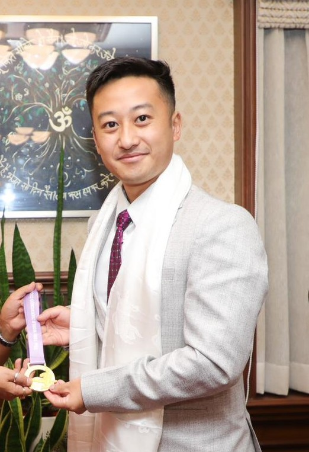

BIO-DATA

Name - Ugen Gurung.
D.O.B - 18th August 1994.
Son of - Mr. M.B Gurung and Mrs. Pranita lepcha.
Black Belt 3rd Dan.
International Achievements/ Representation/Award Recipient:
- Represented India – 16th World Taekwondo Culture Expo 2023, Taekwondowon, Muju, jeollabuk-do, South Korea. 17th – 22nd August 2023. (Gold Medal, Individual under 30 male).
- Represented India – Goodwill Open International Taekwondo Championship, P.L Roy Indoor Stadium, Kolkata, India, 6th – 7th January 2024. (Gold Medal, Individual under 30 male).
- Awarded Honor of Appreciation by Sushma Foundation on August 31st 2023, Gangtok, Sikkim.
- Awarded Honor of Appreciation by Gopal Apriwar Foundation on September 19th 2023, Nagpur, Maharashtra.
- Awarded Swabhiman Excellence Award in the 4th Edition by Delhi Council for welfare of Sportsman, 15th October 2023, Mumbai.
- Awarded Honor of Appreciation by GD Goenka Education City of Haryana on 21st September 2023, Haryana.
- Completed the 1st Basic Instructor Certification Seminar of the World Jeet Kune Do Academy. May 5th 2018, Denver, Colorado USA.
- Awarded Honor of Appreciation to the best Sports person by the India Sports Sangh, on 15th April 2018, Gangtok, Sikkim.
- Awarded Honor of Appreciation to the best Sports person in Taekwondo by the India Sports Sangh, on 9th July 2017 , New Delhi, India
- Represented India – 6th Tirak Taekwondo International championship, 2016, Assumption University, Bangkok Thailand. (Gold-individual event, Silver – team event).
- Represented India - 2016 AAU New York Metropolitan State Championship, March 12th 2016, Queens College, New York, USA. (Gold medal).
- Represented India – 35th International Taekwondo Master Course, 05th July 2014, Kathmandu, Nepal. (Awarded Outstanding Performance among the trainees).
- Represented India – 2nd Asian taekwondo Poomsae Championship, 4th - 11th May 2012, Ho Chi Minh City, Vietnam.
- Represented India – The 7th Gyeongju Korea Open International Taekwondo Championship, 25th-30th October 2012, Gyeongju South Korea.
- Represented India – 3rd Commonwealth Poomsae Taekwondo Championship, 28th to 31st January 2011, Chennai, India. (Gold Medal).
- Represented India – 6th World Taekwondo Championship, July 29-31/2011, Vladivostok, Russia. (Position 18th out of 192).
- Represented India – 5th World Taekwondo Poomsae Championship, October 08-10/2010, Tashkent, Uzbekistan.
- Represented India – World taekwondo Hanmadang Championship, December 08-11/2010, Seoul, South Korea.
- Represented India – 1st world united taekwondo Championship, 21st 22nd October 2005, Dajeeling, India. (Silver medal).
Gold Medals
- 16th World Taekwondo Culture Expo 2023, Taekwondowon, Muju, jeollabuk-do, South Korea. 17th – 22nd August 2023.
- 2016 AAU New York Metropolitan State Championship, March 12th 2016, Queens College, New York, USA.
- 6th Tirak Taekwondo International championship, 2016, Assumption University, Bangkok Thailand.
- 3rd Commonwealth Poomsae Taekwondo Championship, 28th to 31st January 2011, Chennai, India.
- Goodwill Open International Taekwondo Championship, P.L Roy Indoor Stadium, Kolkata, India, 6th – 7th January 2024.
- 38th National Senior kyorugi & 11th National Senior Poomase Taekwondo Championship, 8th to 11th June 2023, Dehradun, Uttrakhand (Four Gold medal in different categories).
- 14th National Open Taekwondo Championship 2023 & 2nd Bhagwan Birsa Munda Trophy 2023, 2nd – 4th September 2023, Ranchi, Jharkhand. (Two Gold Medal in different categories).
- 5th National Taekwondo Poomsae Championship, 6th – 7th April 2012, Guwahati, Assam.
- 4th National Taekwondo Poomsae Championship, 14th – 15th May 2010, Surat, Gujarat.
- 1st National Inter – Zone Poomsae Taekwondo Championship, 12th – 13th January 2011, Bengaluru, Karnataka.
- 1st East Zone Taekwondo Poomsae Championship, 4th – 6th November 2010, Mizoram.
- 13th State Poomsae & 23rd State kyorugi Taekwondo Championship, 30th June to 2nd July 2023, Gyalshing, West Sikkim. (Three Gold Medal in different categories)
- Mount Kanchanjanga Poomase cup Taekwondo Championship 6th June 2023, kalimpong, West Bengal.
- 8th State Taekwondo Championship, 26th – 27th march, 2005, Gangtok.
- State Level Inter Dojang Taekwondo Championship, 2008, Gangtok.
- 1st SATA Cup Invitational Taekwondo Championship, 2006, Gangtok.
- 1st Jankidas Subba Memorial Cup Taekwondo Championship, 2006, Kalangpong.
- Inter Dojang Taekwondo Championship, 05th August 2007, Gangtok.
- Inter Dojang Taekwondo Championship, (Poomsae) 05th August 2007, Gangtok.
- Inter Dojang Taekwondo Championship, 09th August 2007, Gangtok.
- State Taekwondo Poomsae & Kheorugi Championship 2015. Gangtok.
- 1st Utterey Invitational Taekwondo Championship, 11th February 2008, White Hall, Gangtok.
- 05th Invitational Open Taekwondo Championship, 18th – 20th October 2003, Namchi, South Sikkim.-
- 01st Invitational Taekwondo Championship, 09th – 10th February 2002.
- 10th Sate & Invitational Taekwondo Championship, 06th – 07th October 2001, Gangtok.
- 04th State Poomsae Championship, 13th May 2012, Gangtok.
Silver Medals
- 6th Tirak Taekwondo International championship, 2016, Assumption University, Bangkok Thailand.
- 01st World United Taekwondo Championship, 21st - 22nd October, 2005, Darjeeling, West Bengal.
- 13th National Taekwondo Championship, 11th – 12th January, 2003, Kolkata.
- North Bengal Invitational Taekwondo Championship, 22nd – 23rd April 2006, Maynaguri, West Bengal.
- 10th State Taekwondo Championship 29th – 30th December 2007, Namchi, South Sikkim.
- 01st East Zone Taekwondo Poomsae Championship, 04th – 06th November, 2010, Mizoram.
Bronze Medal
- 09th State Taekwondo Championship, 29th – 30th December 2006, Gangtok.
- 11th State Sub Junior Taekwondo Championship 2008.
Judge and Coach/Experiences
- Completed Masters in Sports Science (Taekwondo).
- Have judged and refereed in many State and National level Taekwondo Tournaments in India.
- Poomsae Coach/ Technical Personal at Sikkim Amateur Taekwondo Association (SATA).
- Coached Junior Sikkim State Team and won Medals at the Junior Nationals in Pune.
- Coached In Han-Il Taekwondo Academy, Daegu South Korea. Trained with Master Kim KI Man.